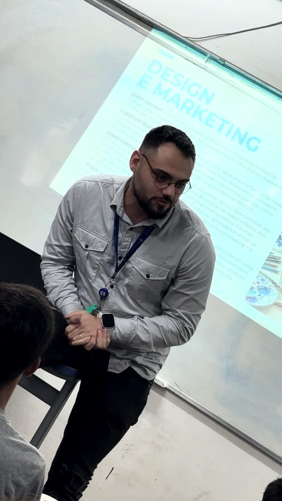

Portfólio de formação
Conteúdo que se transforma em decisão de negócio.
Formatos para empresários, equipes e instituições que precisam conectar aprendizado e aplicação. Veja o que é abordado, como acontece e o que cada participante desenvolve.

Escolha pelo desafio. Avance pela aplicação.
- Posicionamento e proposta de valorWorkshop de 4 horas. Por que o cliente escolheria sua empresa?
- Marketing e comercial integradosTreinamento com workshop de 4 horas. Do primeiro contato à próxima decisão.
- Plano de marketing 2027Workshop de 4 horas. Prioridades, orçamento e execução para uma equipe pequena.
- Sua empresa entrega valor. Sua marca consegue mostrar?Palestra participativa de 1 hora. Uma conversa prática sobre promessa, prova e experiência.
- Diagnóstico e plano de marketingConsultoria empresarial de 12 horas. Direção de marca e marketing para um negócio real.
Os workshops podem ser contratados separadamente ou compor uma trilha. A palestra introduz o tema; a consultoria aprofunda a aplicação em uma empresa.
O encontro precisa caber no objetivo.
Uma hora para sensibilizar
Palestra
Indicada para provocar reflexão e orientar uma ação de melhoria. Inclui exercício breve e espaço para perguntas.
Quatro horas para construir
Workshop
Indicado para construir uma primeira versão de um instrumento e receber devolutivas. A agenda contempla 225 minutos de atividades e 15 minutos de intervalo.
Doze horas para aplicar
Consultoria
Indicada quando o contexto exige análise individual da empresa. Inclui seis horas de encontros e seis horas de elaboração técnica.
Uma experiência adaptada ao público.
Antes da turma, alinhamos setor, maturidade dos negócios, expectativas e necessidades de acessibilidade. O conteúdo pode usar os negócios dos participantes ou casos fictícios, identificados como tal.
Para workshops, a recomendação pedagógica é de 12 a 24 pessoas; grupos maiores exigem ajuste da dinâmica ou apoio de facilitação. Na palestra, a interação é mais próxima em públicos de até 80 pessoas. Os formatos podem ser presenciais ou on-line ao vivo, mediante combinação.
Materiais digitais, exercícios e orientações de aplicação compõem a proposta. Infraestrutura, deslocamento, gravação, direitos de uso, certificado e recursos de acessibilidade são definidos com a organização contratante.
Se a contratação exigir 4 horas pedagógicas efetivas, a agenda dos workshops passa a 4h15, incluindo o intervalo.
Conceitos que viram decisão.
Os conceitos aparecem nos exercícios e nas decisões, não apenas na exposição.
| Fundamento | O que orienta | Como aparece na atividade | 01 | 02 | 03 | 04 | 05 |
|---|---|---|---|---|---|---|---|
| Segmentação e posicionamento | Escolher para quem a oferta faz sentido e por que a empresa seria escolhida. | Mapa de público e situação de compra; matriz de alternativas. | ● | ○ | ○ | ● | ● |
| Proposta de valor | Relacionar necessidade, benefício e evidência — não um slogan. | Matriz promessa × prova; teste de leitura em pares; página de posicionamento. | ● | ○ | ○ | ● | ● |
| Jornada e funil | Separar o caminho do cliente do acompanhamento da empresa. | Funil com critérios de entrada e avanço; ficha de oportunidade; passagem entre áreas. | ○ | ● | ○ | ● | ○ |
| Objetivos e indicadores | Converter problema em objetivo verificável, com período, denominador e linha de base. | Quadro de prioridades, orçamento com premissas, pauta de revisão. | ○ | ● | ● | ○ | ● |
| Aprendizagem pela aplicação | Conceito curto, aplicação imediata, devolutiva por critério e revisão. | Exercícios no negócio real ou caso fictício identificado; critérios de avaliação explícitos. | ● | ● | ● | ● | ● |
Referências conceituais
- Kotler, Philip; Keller, Kevin Lane. Marketing Management. 15ª edição. Pearson, 2016. Segmentação, posicionamento e valor para o cliente.
- Osterwalder, Alexander et al. Value Proposition Design. Wiley, 2014. Relação entre necessidades, oferta e proposta de valor.
- Drucker, Peter F. The Practice of Management. Harper & Brothers, 1954. Objetivos e responsabilidade na gestão.
- Kolb, David A. Experiential Learning. Prentice Hall, 1984. Ciclo de experiência, reflexão, conceito e aplicação.
Os roteiros são adaptações autorais, sem declaração de homologação ou certificação institucional.
Qual decisão precisa
ficar mais clara?
Conte o contexto, o público e o desafio. A proposta parte dessa conversa.